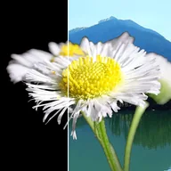

Khóa luma

Loại bỏ các phần tối (hoặc sáng) của lớp.
Luma Key làm cho các phần tối của lớp trở nên trong suốt (các phần sáng với Invert). Threshold là độ sáng tại điểm cắt và Softness là mức độ chuyển tiếp của điểm cắt. Nó hữu ích cho footage lửa, khói hoặc tia lửa được quay trên nền đen, hoặc cho nền trắng với Invert.
Cài đặt
| Cài đặt | Loại | Phạm vi | Mặc định |
|---|---|---|---|
| Ngưỡng | Số | 0 đến 1 | 0.3 |
| Độ mềm | Số | 0 đến 1 | 0.1 |
| Đảo ngược | Bật hoặc tắt | – | Tắt |